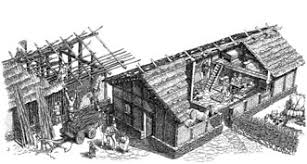

Impellenti lavori chiamano... in questo periodo mi trovo a dover avere più dimestichezza con secchiate di malta e polvere di mattoni che con becher e gentili polverine chimiche!
Blog, abbi pazienza... prima o poi finirà anche questa storia e tornerò a dedicarti un po' di tempo.